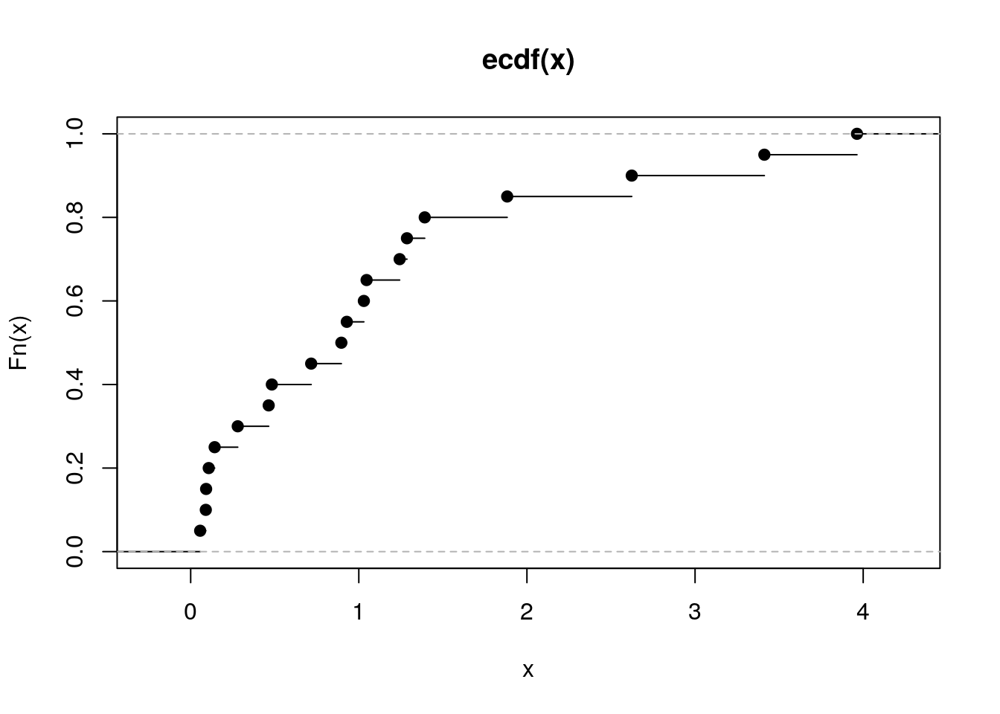

Zadania do części ‘Wybrane procedury statystyczne’
Krzysztof Trajkowski kody w Python
10 września 2019
R Zadanie 3.1
Napisz funkcję momenty(), która dla zadanego wektora liczb wyznaczy średnią, wariancję, skośność i kurtozę.
R code
momenty <- function(x) {
require(e1071)
c(srednia = mean(x), wariancja = var(x), skosnosc = skewness(x), kurtoza = kurtosis(x))
}
momenty(rnorm(20))## Loading required package: e1071## srednia wariancja skosnosc kurtoza
## 0.01876346 0.73078885 1.10262850 0.54934996Python code
import scipy.stats as stats
import numpy as np
import pandas as pd
def momenty(x):
mu = np.mean(x)
var = np.var(x,ddof=1)
sk = stats.skew(x)
ku = stats.kurtosis(x)
return pd.DataFrame({'średnia' :[mu], 'wariancja' :[var],\
'skośność':[sk], 'kurtoza':[ku]})
print(momenty(stats.norm.rvs(size=20)))## średnia wariancja skośność kurtoza
## 0 0.129156 0.799661 -0.509082 -0.34078RR Zadanie 3.2
Ze zbioru danych daneO wyciągnij zmienną VEGF i narysuj dla niej histogram (ile podziałów przyjąć?). Co o zmiennej mówi ten histogram? Zastosuj transformację, która ustabilizuje tą zmienną, a następnie narysuj histogram dla transformowanych danych. Na histogramie zamiast liczebności zaznacz prawdopodobieństwa, następnie dorysuj do tego wykresu ocenę gęstości wyznaczoną z użyciem funkcji density().
R code
Python code
import scipy.stats as stats
import numpy as np
import pandas as pd
import matplotlib.pyplot as plt
daneO = pd.read_csv("http://www.biecek.pl/R/dane/daneO.csv",sep=";",header=0)
fig = plt.figure(figsize=(14,6))
ax1 = fig.add_subplot(1,2,1)
ax2 = fig.add_subplot(1,2,2)
ax1.hist(daneO['VEGF'],bins=30)
N,bins,patches = ax2.hist(np.log(daneO['VEGF']),bins=30,density=True)
X = np.linspace(np.min(bins), np.max(bins), 100)
density = stats.gaussian_kde(np.log(daneO['VEGF']))
ax2.plot(X,density(X),color='red',linewidth=2)
plt.tight_layout()
plt.savefig('z32.png')
Wykresy.
R Zadanie 3.3
W zbiorze danych daneO znajduje się zmienna liczbowa Wiek i czynnikowa Receptory.estrogenowe. Narysuj wykres pudełkowy dla zmiennej Wiek w rozbiciu na zmienną Receptory.estrogenowe. Narysuj wykres skrzypcowy dla zmiennej Wiek w rozbiciu na poziomy zmiennej Niepowodzenia.
R code
## [1] 29 57Python code
import pandas as pd
import matplotlib.pyplot as plt
import seaborn as sns
daneO = pd.read_csv("http://www.biecek.pl/R/dane/daneO.csv",sep=";",header=0)
daneO = daneO.rename(columns=lambda x: x.replace('.', '_'))
fig = plt.figure(figsize=(14,6))
ax1 = fig.add_subplot(1,2,1)
ax2 = fig.add_subplot(1,2,2)
sns.boxplot(x='Receptory_estrogenowe',y='Wiek',data=daneO, palette="Set2", ax=ax1)
sns.violinplot(x='Niepowodzenia',y='Wiek',data=daneO, palette="Set2",ax=ax2)
plt.tight_layout()
plt.savefig('z33.png')Wykresy.
R Zadanie 3.4
Narysuj wykres rozrzutu dla zmiennych Wiek i VEGF (bez krzywej regresji nieparametrycznej). Czy wykres ten zmieni się, jeżeli zmienne będą podane w innej kolejności? Następnie zmienną VEGF narysuj w skali logarytmicznej. Narysuj też wykres rozrzutu dla tych zmiennych w rozbiciu na poziomy zmiennej Niepowodzenia.
R code
Python code
import pandas as pd
import matplotlib.pyplot as plt
daneO = pd.read_csv("http://www.biecek.pl/R/dane/daneO.csv",sep=";",header=0)
daneO = daneO.rename(columns=lambda x: x.replace('.', '_'))
x = daneO["Wiek"]
y = daneO["VEGF"]
fig = plt.figure(figsize=(6, 4))
grid = plt.GridSpec(4, 4, hspace=0.2, wspace=0.2)
main_ax = fig.add_subplot(grid[:-1, 1:])
y_b = fig.add_subplot(grid[:-1, 0], xticklabels=[], sharey=main_ax)
x_b = fig.add_subplot(grid[-1, 1:], yticklabels=[], sharex=main_ax)
main_ax.plot(x, y, 'ok', markersize=5, alpha=0.2, color="blue")
main_ax.xaxis.tick_top()
main_ax.yaxis.tick_right()
main_ax.set_xlabel('Wiek')
main_ax.set_ylabel('VEGF')
x_b.boxplot(x,vert=False,widths = 0.4)
x_b.axis('off')
y_b.boxplot(y,widths = 0.4)
y_b.axis('off')
fig.subplots_adjust(bottom = 0)
fig.subplots_adjust(left = 0)
plt.savefig('z34a.png')
Wykresy.
import pandas as pd
import matplotlib.pyplot as plt
daneO = pd.read_csv("http://www.biecek.pl/R/dane/daneO.csv",sep=";",header=0)
daneO = daneO.rename(columns=lambda x: x.replace('.', '_'))
y = daneO["Wiek"]
x = daneO["VEGF"]
fig = plt.figure(figsize=(6, 4))
grid = plt.GridSpec(4, 4, hspace=0.2, wspace=0.2)
main_ax = fig.add_subplot(grid[:-1, 1:])
y_b = fig.add_subplot(grid[:-1, 0], xticklabels=[], sharey=main_ax)
x_b = fig.add_subplot(grid[-1, 1:], yticklabels=[], sharex=main_ax)
main_ax.plot(x, y, 'ok', markersize=5, alpha=0.2, color="blue")
main_ax.xaxis.tick_top()
main_ax.yaxis.tick_right()
main_ax.set_xlabel('VEGF')
main_ax.set_ylabel('Wiek')
x_b.boxplot(x,vert=False,widths = 0.4)
x_b.axis('off')
y_b.boxplot(y,widths = 0.4)
y_b.axis('off')
fig.subplots_adjust(bottom = 0)
fig.subplots_adjust(left = 0)
plt.savefig('z34b.png')Wykresy.
import pandas as pd
import matplotlib.pyplot as plt
import numpy as np
daneO = pd.read_csv("http://www.biecek.pl/R/dane/daneO.csv",sep=";",header=0)
daneO = daneO.rename(columns=lambda x: x.replace('.', '_'))
x = daneO["Wiek"]
y = np.log(daneO["VEGF"])
fig = plt.figure(figsize=(6, 4))
grid = plt.GridSpec(4, 4, hspace=0.2, wspace=0.2)
main_ax = fig.add_subplot(grid[:-1, 1:])
y_b = fig.add_subplot(grid[:-1, 0], xticklabels=[], sharey=main_ax)
x_b = fig.add_subplot(grid[-1, 1:], yticklabels=[], sharex=main_ax)
main_ax.plot(x, y, 'ok', markersize=5, alpha=0.2, color="blue")
main_ax.xaxis.tick_top()
main_ax.yaxis.tick_right()
main_ax.set_xlabel('Wiek')
main_ax.set_ylabel('VEGF')
x_b.boxplot(x,vert=False,widths = 0.4)
x_b.axis('off')
y_b.boxplot(y,widths = 0.4)
y_b.axis('off')
fig.subplots_adjust(bottom = 0)
fig.subplots_adjust(left = 0)
plt.savefig('z34c.png')
Wykresy.
import pandas as pd
import matplotlib.pyplot as plt
import numpy as np
import seaborn as sns
daneO = pd.read_csv("http://www.biecek.pl/R/dane/daneO.csv",sep=";",header=0)
daneO = daneO.rename(columns=lambda x: x.replace('.', '_'))
plt.figure(figsize=(6, 4))
g = sns.lmplot(x="Wiek", y="VEGF", hue="Niepowodzenia", truncate=True, data=daneO, lowess=False,ci=None)
g.set(yscale='log')
plt.tight_layout()
plt.savefig('z34d.png')
Wykresy.
R Zadanie 3.5
Wygeneruj 20 liczb z rozkładu wykładniczego i narysuj dla wygenerowanego wektora dystrybuantę empiryczną. Następnie zrób to samo dla wektora 200 i 2000 liczb. Używając funkcji MASS::fitdistr() oceń parametr rate dla wylosowanego wektora.
R code

## rate
## 0.9035131
## (0.2020317)Python code
import scipy.stats as stats
import matplotlib.pyplot as plt
from statsmodels.distributions.empirical_distribution import *
fig = plt.figure(figsize=(14,5))
ax1 = fig.add_subplot(1,3,1)
ax2 = fig.add_subplot(1,3,2)
ax3 = fig.add_subplot(1,3,3)
x = stats.expon.rvs(size=20, random_state=2305)
ax1.plot(x,ECDF(x)(x),'.',linewidth=2, color='C1')
fit = stats.expon.fit(x)
ax1.set_title('loc = %.4f, rate = %.4f' % (fit[0],fit[1]))
x = stats.expon.rvs(size=200, random_state=2305)
ax2.plot(x,ECDF(x)(x),'.',linewidth=2, color='C1')
fit = stats.expon.fit(x)
ax2.set_title('loc = %.4f, rate = %.4f' % (fit[0],fit[1]))
x = stats.expon.rvs(size=2000, random_state=2305)
ax3.plot(x,ECDF(x)(x),'.',linewidth=2, color='C1')
fit = stats.expon.fit(x)
ax3.set_title('loc = %.4f, rate = %.4f' % (fit[0],fit[1]))
plt.tight_layout()
plt.savefig('z35.png')
Wykresy.
R Zadanie 3.6
Używając metod analizy wariancji sprawdź, średnia której ze zmiennych ilościowych w zbiorze danych daneO różni się w zależności od poziomu zmiennej Niepowodzenia. Następnie zbuduj wektor zawierający p-wartości dla wyników z wykonanych analiz.
Zmienna Receptory.progesteronowe ma wartości na 4 poziomach. Wykonaj dla niej analizę wariancji oraz testy post hoc.
R code
##
## Call:
## lm(formula = Wiek ~ Niepowodzenia, data = daneO)
##
## Residuals:
## Min 1Q Median 3Q Max
## -16.869 -3.869 0.131 4.131 11.131
##
## Coefficients:
## Estimate Std. Error t value Pr(>|t|)
## (Intercept) 45.8690 0.6783 67.620 <2e-16 ***
## Niepowodzeniawznowa -2.6383 1.8529 -1.424 0.158
## ---
## Signif. codes: 0 '***' 0.001 '**' 0.01 '*' 0.05 '.' 0.1 ' ' 1
##
## Residual standard error: 6.217 on 95 degrees of freedom
## Multiple R-squared: 0.02089, Adjusted R-squared: 0.01059
## F-statistic: 2.027 on 1 and 95 DF, p-value: 0.1578##
## Call:
## lm(formula = Okres.bez.wznowy ~ Niepowodzenia, data = daneO)
##
## Residuals:
## Min 1Q Median 3Q Max
## -22.3846 -5.1928 -0.1928 7.8072 17.6154
##
## Coefficients:
## Estimate Std. Error t value Pr(>|t|)
## (Intercept) 38.193 1.028 37.155 <2e-16 ***
## Niepowodzeniawznowa -5.808 2.793 -2.079 0.0403 *
## ---
## Signif. codes: 0 '***' 0.001 '**' 0.01 '*' 0.05 '.' 0.1 ' ' 1
##
## Residual standard error: 9.365 on 94 degrees of freedom
## (1 observation deleted due to missingness)
## Multiple R-squared: 0.04397, Adjusted R-squared: 0.0338
## F-statistic: 4.323 on 1 and 94 DF, p-value: 0.04032##
## Call:
## lm(formula = noweVEGF ~ Niepowodzenia, data = daneO)
##
## Residuals:
## Min 1Q Median 3Q Max
## -2.35166 -0.68619 -0.00433 0.66172 2.68689
##
## Coefficients:
## Estimate Std. Error t value Pr(>|t|)
## (Intercept) 7.1223 0.1131 62.995 < 2e-16 ***
## Niepowodzeniawznowa 1.1528 0.3088 3.733 0.000323 ***
## ---
## Signif. codes: 0 '***' 0.001 '**' 0.01 '*' 0.05 '.' 0.1 ' ' 1
##
## Residual standard error: 1.036 on 95 degrees of freedom
## Multiple R-squared: 0.1279, Adjusted R-squared: 0.1187
## F-statistic: 13.93 on 1 and 95 DF, p-value: 0.0003227## Wiek Okres.bez.wznowy noweVEGF
## 0.1577660243 0.0403167745 0.0003226867## Tukey multiple comparisons of means
## 95% family-wise confidence level
##
## Fit: aov(formula = noweVEGF ~ Receptory.progesteronowe, data = daneO)
##
## $Receptory.progesteronowe
## diff lwr upr p adj
## (+)-(-) 0.1282776 -0.781781 1.0383361 0.9826873
## (++)-(-) -0.3987131 -1.186847 0.3894207 0.5494245
## (+++)-(-) -0.7396100 -1.681610 0.2023901 0.1756259
## (++)-(+) -0.5269907 -1.386915 0.3329338 0.3809265
## (+++)-(+) -0.8678876 -1.870723 0.1349481 0.1138290
## (+++)-(++) -0.3408969 -1.234557 0.5527629 0.7501169Python code
import matplotlib.pyplot as plt
import pandas as pd
import numpy as np
import statsmodels.formula.api as smf
import statsmodels.api as sm
from statsmodels.stats.multicomp import pairwise_tukeyhsd
daneO = pd.read_csv("http://www.biecek.pl/R/dane/daneO.csv",sep=";",header=0)
daneO = daneO.rename(columns=lambda x: x.replace('.', '_'))
daneO['noweVEGF'] = np.log(daneO['VEGF'])
model1 = smf.ols('Wiek ~ Niepowodzenia', data=daneO, missing='drop').fit()
model2 = smf.ols('Okres_bez_wznowy ~ Niepowodzenia', data=daneO, missing='drop').fit()
model3 = smf.ols('noweVEGF ~ Niepowodzenia', data=daneO, missing='drop').fit()
print(model1.summary(),'\n',model2.summary(),'\n',model3.summary(),'\n')
print(pd.DataFrame({'Wiek':[model1.pvalues[1]], 'Okres_bez_wznowy':[model2.pvalues[1]], 'noweVEGF':[model3.pvalues[1]] }),'\n')
model = smf.ols('noweVEGF ~ Receptory_progesteronowe', data=daneO, missing='drop').fit()
aov_table = sm.stats.anova_lm(model,typ=2)
print(aov_table,'\n')
df = daneO.dropna()
tukey = pairwise_tukeyhsd(df['noweVEGF'], df['Receptory_progesteronowe'],alpha=0.05)
print(tukey)
fig = plt.figure(figsize=(6, 4))
ax1 = fig.add_subplot(1,1,1)
tukey.plot_simultaneous(comparison_name='(+++)',ax=ax1)
plt.tight_layout()
plt.savefig('z36.png')## OLS Regression Results
## ==============================================================================
## Dep. Variable: Wiek R-squared: 0.021
## Model: OLS Adj. R-squared: 0.011
## Method: Least Squares F-statistic: 2.027
## Date: Sat, 07 Sep 2019 Prob (F-statistic): 0.158
## Time: 16:36:16 Log-Likelihood: -313.87
## No. Observations: 97 AIC: 631.7
## Df Residuals: 95 BIC: 636.9
## Df Model: 1
## Covariance Type: nonrobust
## ===========================================================================================
## coef std err t P>|t| [0.025 0.975]
## -------------------------------------------------------------------------------------------
## Intercept 45.8690 0.678 67.620 0.000 44.522 47.216
## Niepowodzenia[T.wznowa] -2.6383 1.853 -1.424 0.158 -6.317 1.040
## ==============================================================================
## Omnibus: 9.887 Durbin-Watson: 0.044
## Prob(Omnibus): 0.007 Jarque-Bera (JB): 10.037
## Skew: -0.773 Prob(JB): 0.00662
## Kurtosis: 3.310 Cond. No. 2.99
## ==============================================================================
##
## Warnings:
## [1] Standard Errors assume that the covariance matrix of the errors is correctly specified.
## OLS Regression Results
## ==============================================================================
## Dep. Variable: Okres_bez_wznowy R-squared: 0.044
## Model: OLS Adj. R-squared: 0.034
## Method: Least Squares F-statistic: 4.323
## Date: Sat, 07 Sep 2019 Prob (F-statistic): 0.0403
## Time: 16:36:16 Log-Likelihood: -349.96
## No. Observations: 96 AIC: 703.9
## Df Residuals: 94 BIC: 709.0
## Df Model: 1
## Covariance Type: nonrobust
## ===========================================================================================
## coef std err t P>|t| [0.025 0.975]
## -------------------------------------------------------------------------------------------
## Intercept 38.1928 1.028 37.155 0.000 36.152 40.234
## Niepowodzenia[T.wznowa] -5.8082 2.793 -2.079 0.040 -11.354 -0.262
## ==============================================================================
## Omnibus: 3.222 Durbin-Watson: 1.955
## Prob(Omnibus): 0.200 Jarque-Bera (JB): 2.457
## Skew: -0.247 Prob(JB): 0.293
## Kurtosis: 2.391 Cond. No. 2.98
## ==============================================================================
##
## Warnings:
## [1] Standard Errors assume that the covariance matrix of the errors is correctly specified.
## OLS Regression Results
## ==============================================================================
## Dep. Variable: noweVEGF R-squared: 0.128
## Model: OLS Adj. R-squared: 0.119
## Method: Least Squares F-statistic: 13.93
## Date: Sat, 07 Sep 2019 Prob (F-statistic): 0.000323
## Time: 16:36:16 Log-Likelihood: -140.08
## No. Observations: 97 AIC: 284.2
## Df Residuals: 95 BIC: 289.3
## Df Model: 1
## Covariance Type: nonrobust
## ===========================================================================================
## coef std err t P>|t| [0.025 0.975]
## -------------------------------------------------------------------------------------------
## Intercept 7.1223 0.113 62.995 0.000 6.898 7.347
## Niepowodzenia[T.wznowa] 1.1528 0.309 3.733 0.000 0.540 1.766
## ==============================================================================
## Omnibus: 0.062 Durbin-Watson: 2.070
## Prob(Omnibus): 0.970 Jarque-Bera (JB): 0.192
## Skew: 0.048 Prob(JB): 0.908
## Kurtosis: 2.804 Cond. No. 2.99
## ==============================================================================
##
## Warnings:
## [1] Standard Errors assume that the covariance matrix of the errors is correctly specified.
##
## Wiek Okres_bez_wznowy noweVEGF
## 0 0.157766 0.040317 0.000323
##
## sum_sq df F PR(>F)
## Receptory_progesteronowe 8.618356 3.0 2.314872 0.081492
## Residual 106.727094 86.0 NaN NaN
##
## Multiple Comparison of Means - Tukey HSD, FWER=0.05
## ===================================================
## group1 group2 meandiff p-adj lower upper reject
## ---------------------------------------------------
## (+) (++) -0.4723 0.5403 -1.4032 0.4586 False
## (+) (+++) -0.8883 0.1309 -1.9463 0.1696 False
## (+) (-) -0.3284 0.8042 -1.3338 0.6771 False
## (++) (+++) -0.416 0.6146 -1.3273 0.4953 False
## (++) (-) 0.1439 0.9 -0.7058 0.9937 False
## (+++) (-) 0.56 0.4502 -0.4274 1.5473 False
## ---------------------------------------------------
Wykresy.
R Zadanie 3.7
Wykonaj model regresji liniowej dla zmiennych cisnienie.skurczowe i wiek ze zbioru danych daneSoc.
R code
##
## Call:
## lm(formula = cisnienie.skurczowe ~ wiek, data = daneSoc)
##
## Residuals:
## Min 1Q Median 3Q Max
## -43.328 -10.776 0.513 10.848 42.017
##
## Coefficients:
## Estimate Std. Error t value Pr(>|t|)
## (Intercept) 138.30535 3.61690 38.239 <2e-16 ***
## wiek -0.03138 0.07981 -0.393 0.695
## ---
## Signif. codes: 0 '***' 0.001 '**' 0.01 '*' 0.05 '.' 0.1 ' ' 1
##
## Residual standard error: 15.75 on 202 degrees of freedom
## Multiple R-squared: 0.0007647, Adjusted R-squared: -0.004182
## F-statistic: 0.1546 on 1 and 202 DF, p-value: 0.6946Python code
import pandas as pd
import statsmodels.formula.api as smf
daneSoc = pd.read_csv("http://www.biecek.pl/R/dane/daneSoc.csv", sep=";")
daneSoc = daneSoc.rename(columns=lambda x: x.replace(' ', '_'))
print(smf.ols('cisnienie_skurczowe~wiek', data=daneSoc, missing='drop').fit().summary())## OLS Regression Results
## ===============================================================================
## Dep. Variable: cisnienie_skurczowe R-squared: 0.001
## Model: OLS Adj. R-squared: -0.004
## Method: Least Squares F-statistic: 0.1546
## Date: Sat, 07 Sep 2019 Prob (F-statistic): 0.695
## Time: 20:19:41 Log-Likelihood: -850.80
## No. Observations: 204 AIC: 1706.
## Df Residuals: 202 BIC: 1712.
## Df Model: 1
## Covariance Type: nonrobust
## ==============================================================================
## coef std err t P>|t| [0.025 0.975]
## ------------------------------------------------------------------------------
## Intercept 138.3053 3.617 38.239 0.000 131.174 145.437
## wiek -0.0314 0.080 -0.393 0.695 -0.189 0.126
## ==============================================================================
## Omnibus: 0.480 Durbin-Watson: 1.828
## Prob(Omnibus): 0.787 Jarque-Bera (JB): 0.606
## Skew: -0.098 Prob(JB): 0.739
## Kurtosis: 2.819 Cond. No. 149.
## ==============================================================================
##
## Warnings:
## [1] Standard Errors assume that the covariance matrix of the errors is correctly specified.R Zadanie 3.8
Odczytaj ramkę danych z zadania 1.13. Następnie wykonaj model regresji dla zmiennej Kreatynina.1, za zmienne zależne wybierz Kreatynina.7 i/lub Wiek.
Wyznacz dla tych zmiennych model regresji liniowej, oceń które zmienne są w istotnej statystycznie zależności, a następnie przedstaw graficznie zależność pomiędzy tymi zmiennymi.
R code
##
## Call:
## lm(formula = Kreatynina.7 ~ Kreatynina.1 + Wiek, data = daneBT)
##
## Residuals:
## Min 1Q Median 3Q Max
## -3.8428 -1.0024 -0.3921 0.6221 5.6952
##
## Coefficients:
## Estimate Std. Error t value Pr(>|t|)
## (Intercept) 2.87242 2.33680 1.229 0.23259
## Kreatynina.1 0.59609 0.18892 3.155 0.00477 **
## Wiek -0.06498 0.04033 -1.611 0.12209
## ---
## Signif. codes: 0 '***' 0.001 '**' 0.01 '*' 0.05 '.' 0.1 ' ' 1
##
## Residual standard error: 2.102 on 21 degrees of freedom
## Multiple R-squared: 0.3614, Adjusted R-squared: 0.3006
## F-statistic: 5.943 on 2 and 21 DF, p-value: 0.00901Python code
import pandas as pd
import statsmodels.formula.api as smf
import matplotlib.pyplot as plt
import statsmodels.api as sm
lowess = sm.nonparametric.lowess
daneBT = pd.read_csv("http://www.biecek.pl/R/dane/daneBioTech.csv",sep=';',decimal=',', header=0, encoding='iso8859_2')
daneBT = daneBT.rename(columns=lambda x: x.replace(' ', '_'))
print(smf.ols('Kreatynina_7~Kreatynina_1+Wiek_', data=daneBT, missing='drop').fit().summary())
fig = plt.figure(figsize=(6, 4))
grid = plt.GridSpec(4, 4, hspace=0.2, wspace=0.2)
main_ax = fig.add_subplot(grid[:-1, 1:])
y_b = fig.add_subplot(grid[:-1, 0], xticklabels=[], sharey=main_ax)
x_b = fig.add_subplot(grid[-1, 1:], yticklabels=[], sharex=main_ax)
x = daneBT['Kreatynina_1']; y = daneBT['Kreatynina_7']
w = lowess(y,x, frac=2./3)
main_ax.plot(x, y, 'ok', markersize=5, alpha=0.2, color="blue")
main_ax.plot(w[:,0],w[:,1])
main_ax.xaxis.tick_top()
main_ax.yaxis.tick_right()
main_ax.set_xlabel('Kreatynina_1')
main_ax.set_ylabel('Kreatynina_7')
x_b.boxplot(x,vert=False,widths = 0.4)
x_b.axis('off')
y_b.boxplot(y,widths = 0.4)
y_b.axis('off')
fig.subplots_adjust(bottom = 0)
fig.subplots_adjust(left = 0)
plt.savefig('z38a.png')
fig = plt.figure(figsize=(6, 4))
grid = plt.GridSpec(4, 4, hspace=0.2, wspace=0.2)
main_ax = fig.add_subplot(grid[:-1, 1:])
y_b = fig.add_subplot(grid[:-1, 0], xticklabels=[], sharey=main_ax)
x_b = fig.add_subplot(grid[-1, 1:], yticklabels=[], sharex=main_ax)
x = daneBT['Wiek_']; y = daneBT['Kreatynina_7']
w = lowess(y,x, frac=2./3)
main_ax.plot(x, y, 'ok', markersize=5, alpha=0.2, color="blue")
main_ax.plot(w[:,0],w[:,1])
main_ax.xaxis.tick_top()
main_ax.yaxis.tick_right()
main_ax.set_xlabel('Wiek')
main_ax.set_ylabel('Kreatynina_7')
x_b.boxplot(x,vert=False,widths = 0.4)
x_b.axis('off')
y_b.boxplot(y,widths = 0.4)
y_b.axis('off')
fig.subplots_adjust(bottom = 0)
fig.subplots_adjust(left = 0)
plt.savefig('z38b.png')## OLS Regression Results
## ==============================================================================
## Dep. Variable: Kreatynina_7 R-squared: 0.361
## Model: OLS Adj. R-squared: 0.301
## Method: Least Squares F-statistic: 5.943
## Date: Sun, 08 Sep 2019 Prob (F-statistic): 0.00901
## Time: 21:19:44 Log-Likelihood: -50.280
## No. Observations: 24 AIC: 106.6
## Df Residuals: 21 BIC: 110.1
## Df Model: 2
## Covariance Type: nonrobust
## ================================================================================
## coef std err t P>|t| [0.025 0.975]
## --------------------------------------------------------------------------------
## Intercept 2.8724 2.337 1.229 0.233 -1.987 7.732
## Kreatynina_1 0.5961 0.189 3.155 0.005 0.203 0.989
## Wiek_ -0.0650 0.040 -1.611 0.122 -0.149 0.019
## ==============================================================================
## Omnibus: 6.891 Durbin-Watson: 2.015
## Prob(Omnibus): 0.032 Jarque-Bera (JB): 4.738
## Skew: 0.870 Prob(JB): 0.0936
## Kurtosis: 4.308 Cond. No. 284.
## ==============================================================================
##
## Warnings:
## [1] Standard Errors assume that the covariance matrix of the errors is correctly specified.Wykresy.

Wykresy.
R Zadanie 3.9
Wykorzystując wybrany test statystyczny sprawdź, która ze zmiennych ilościowych z ramki danych daneO ma rozkład istotnie różny od normalnego.
R code
##
## Shapiro-Francia normality test
##
## data: daneO$Wiek
## W = 0.94523, p-value = 0.0009068##
## Shapiro-Francia normality test
##
## data: daneO$Okres.bez.wznowy
## W = 0.97905, p-value = 0.114##
## Shapiro-Francia normality test
##
## data: daneO$VEGF
## W = 0.59981, p-value = 9.471e-13Python code
import pandas as pd
import scipy.stats as stats
daneO = pd.read_csv("http://www.biecek.pl/R/dane/daneO.csv",sep=";",header=0)
daneO = daneO.rename(columns=lambda x: x.replace('.', '_'))
print(stats.shapiro(daneO['Wiek']))
print(stats.shapiro(daneO['Okres_bez_wznowy'].dropna()))
print(stats.shapiro(daneO['VEGF']))## (0.9425363540649414, 0.00034700013929978013)
## (0.976333498954773, 0.07965163141489029)
## (0.6084718704223633, 1.0720493672747734e-14)RR Zadanie 3.10
Wyznacz moc wybranego testu normalności jako funkcję poziomu istotności dla alternatywy w postaci rozkładu jednostajnego i dla liczebności próby 50.
R code
Python code
import numpy as np
import scipy.stats as stats
N = 1000
n = 50
pwart = [stats.shapiro(stats.uniform.rvs(size=n))[1] for i in range(N) ]
alfy = np.arange(0,1,0.01)
moce = [np.mean(np.less(pwart,[i])) for i in alfy]
import matplotlib.pyplot as plt
fig = plt.figure(figsize=(10,6))
plt.plot(alfy,moce)
plt.xlabel('alfy')
plt.ylabel('moce')
plt.tight_layout()
plt.savefig('R3_10.png')
Wykresy.
R Zadanie 3.11
Sprawdź, które zmienne ilościowe z ramki danych daneO są ze sobą istotnie statystycznie skorelowane.
R code
##
## Pearson's product-moment correlation
##
## data: daneO$Wiek and daneO$Okres.bez.wznowy
## t = 1.1713, df = 94, p-value = 0.2444
## alternative hypothesis: true correlation is not equal to 0
## 95 percent confidence interval:
## -0.08253032 0.31290198
## sample estimates:
## cor
## 0.1199402##
## Pearson's product-moment correlation
##
## data: daneO$Wiek and daneO$VEGF
## t = -1.058, df = 95, p-value = 0.2927
## alternative hypothesis: true correlation is not equal to 0
## 95 percent confidence interval:
## -0.30088630 0.09354158
## sample estimates:
## cor
## -0.1079171##
## Pearson's product-moment correlation
##
## data: daneO$Okres.bez.wznowy and daneO$VEGF
## t = -1.416, df = 94, p-value = 0.1601
## alternative hypothesis: true correlation is not equal to 0
## 95 percent confidence interval:
## -0.33529190 0.05763505
## sample estimates:
## cor
## -0.1445208Python code
import pandas as pd
import scipy.stats as stats
daneO = pd.read_csv("http://www.biecek.pl/R/dane/daneO.csv",sep=";",header=0)
daneO = daneO.rename(columns=lambda x: x.replace('.', '_'))
df1 = daneO[['Wiek','Okres_bez_wznowy']].dropna()
df2 = daneO[['Wiek','VEGF']].dropna()
df3 = daneO[['Okres_bez_wznowy','VEGF']].dropna()
print(stats.pearsonr(df1['Wiek'],df1['Okres_bez_wznowy']))
print(stats.pearsonr(df2['Wiek'],df2['VEGF']))
print(stats.pearsonr(df3['Okres_bez_wznowy'],df3['VEGF']))## (0.11994017124783223, 0.24443124390704238)
## (-0.10791710956018545, 0.2927270135444388)
## (-0.14452083549318565, 0.1600667106417798)R Zadanie 3.12
W zbiorze danych mieszkania podziel zmienną cena na zmienną jakościową opisującą, czy cena jest wyższa od 175000, a zmienną powierzchnia podziel na zmienną jakościową opisującą, czy powierzchnia jest większa od \(45m^2\). Następnie wyznacz poznane współczynniki zgodności dla tych dwóch zmiennych jakościowych.
R code
mieszkania <- Przewodnik::mieszkania
nowaCena = cut(mieszkania$cena, c(0,175000,Inf), c("niska","wysoka"))
nowaPowierzchnia = cut(mieszkania$powierzchnia, c(0,45,Inf), c("mala","duza"))
library(irr)## Loading required package: lpSolve## Cohen's Kappa for 2 Raters (Weights: unweighted)
##
## Subjects = 200
## Raters = 2
## Kappa = 0.79
##
## z = 11.2
## p-value = 0Python code
import pandas as pd
from statsmodels.stats.inter_rater import cohens_kappa
import numpy as np
mieszkania = pd.read_csv("http://www.biecek.pl/R/dane/daneMieszkania.csv",sep=';')
nowaCena = pd.cut(mieszkania['cena'],[0,175000,np.inf],labels=['niska','wysoka'],precision=0)
nowaPowierzchnia = pd.cut(mieszkania['powierzchnia'],[0,45,np.inf],labels=['mala','duza'],precision=0)
print(cohens_kappa(pd.crosstab(index=nowaCena, columns=nowaPowierzchnia)))## Simple Kappa Coefficient
## --------------------------------
## Kappa 0.7900
## ASE 0.0433
## 95% Lower Conf Limit 0.7051
## 95% Upper Conf Limit 0.8749
##
## Test of H0: Simple Kappa = 0
##
## ASE under H0 0.0706
## Z 11.1863
## One-sided Pr > Z 0.0000
## Two-sided Pr > |Z| 0.0000RR Zadanie 3.13
Napisz funkcję, która dla danego wektora liczb (zakładamy, że są to liczby dodatnie) sprawdza, czy po zastosowaniu transformacji logarytmicznej, odwrotnej lub pierwiastkowej dane nie są “bardziej normalne”. Jako wynik funkcja przekazuje wektor danych przekształconych albo nie (tak by uzyskać wektor najbardziej zbliżony do rozkładu normalnego) oraz informację, czy i jaką transformację zastosowano. Do badania odległości do rozkładu normalnego wykorzystać można odległość pomiędzy dystrybuantami. Uwaga: porównujemy z rodziną rozkładów normalnych a nie jednym rozkładem!
R code
inteligentnaTransformacja <- function(x) {
require(nortest)
wynik = list(D = lillie.test(x)$statistic, trans="bez zmian", x = x)
nx = log(x)
if (lillie.test(nx)$statistic < wynik$D) {
wynik = list(D = lillie.test(nx)$statistic, trans="log", x = nx)
}
nx = sqrt(x)
if (lillie.test(nx)$statistic < wynik$D) {
wynik = list(D = lillie.test(nx)$statistic, trans="sqrt", x = nx)
}
nx = 1/x
if (lillie.test(nx)$statistic < wynik$D) {
wynik = list(D = lillie.test(nx)$statistic, trans="ivers", x = nx)
}
wynik
}
inteligentnaTransformacja(rnorm(100,5))## $D
## D
## 0.06557435
##
## $trans
## [1] "bez zmian"
##
## $x
## [1] 4.565578 4.318175 4.917427 5.577285 1.417015 4.047155 5.735521
## [8] 4.351243 5.852110 5.221988 4.653735 5.383334 5.341229 4.747503
## [15] 4.961536 2.595349 5.184420 4.795092 5.815803 4.069511 5.648910
## [22] 5.733018 5.509098 4.064623 3.633067 4.587372 4.328461 6.290386
## [29] 5.002624 4.457860 5.250542 6.348439 5.743273 6.466114 5.910505
## [36] 5.786866 5.529514 4.173414 4.868019 5.810563 5.359470 4.036221
## [43] 5.577982 5.788747 6.457072 5.412366 3.126871 4.361299 3.803430
## [50] 4.459494 4.705191 5.386204 5.998473 6.112645 4.827934 5.689780
## [57] 6.072730 5.618089 3.061268 3.799030 3.972497 6.612829 5.697447
## [64] 5.448618 5.003145 3.751567 4.567858 5.220047 3.433674 4.363347
## [71] 3.758389 7.572565 6.013525 4.996670 3.516463 6.694572 5.075592
## [78] 5.246550 5.025149 5.960306 6.008729 4.836145 5.343044 5.213504
## [85] 5.503936 2.412904 4.609991 4.742117 6.858967 5.805095 6.694513
## [92] 3.933233 6.292018 3.570829 4.541844 3.581728 4.713894 3.084655
## [99] 4.967130 5.670866## $D
## D
## 0.04204504
##
## $trans
## [1] "log"
##
## $x
## [1] -1.7187209 -1.2584754 -1.9168167 -1.8966816 -1.6421399 -1.4619434
## [7] -1.6682911 -1.5604142 -1.8749530 -1.5120334 -1.6491543 -2.1747439
## [13] -1.5493856 -1.6381848 -1.5019376 -1.4448826 -1.7585575 -1.7338921
## [19] -1.6402376 -1.5971326 -1.5271923 -1.3837748 -1.6003709 -1.7998482
## [25] -1.8172222 -1.3383094 -1.4277036 -2.0476545 -1.4327159 -1.5814696
## [31] -1.2155818 -1.7811978 -1.9845938 -1.6086111 -1.9271963 -1.6100824
## [37] -1.4123186 -1.6255640 -1.8078466 -1.6981094 -1.8498234 -1.4840351
## [43] -1.4570542 -2.0013664 -1.7951182 -1.7636724 -1.3577397 -1.6217416
## [49] -1.5305291 -1.7491480 -1.5670951 -1.3643687 -1.8771075 -1.8536520
## [55] -1.2870040 -1.6026026 -1.0811022 -1.5071590 -1.5324587 -1.6475454
## [61] -1.4518002 -1.8285182 -1.8917009 -0.8718291 -1.7362322 -1.1270156
## [67] -1.4128010 -1.8220370 -1.2772915 -1.5402508 -1.8668272 -1.4041916
## [73] -1.6863402 -1.3352732 -1.5075876 -1.6212064 -1.5514043 -1.9183022
## [79] -1.1042966 -1.4580470 -1.9315529 -1.1191978 -1.3740839 -1.6374544
## [85] -1.5700216 -1.6489179 -1.8681265 -1.6160132 -1.7683719 -1.7266633
## [91] -1.6039865 -1.7232656 -1.4065537 -1.5844962 -1.4929598 -1.4366524
## [97] -1.1339116 -1.7472100 -1.8244068 -1.7979060## $D
## D
## 0.05129553
##
## $trans
## [1] "sqrt"
##
## $x
## [1] 4.952717 3.830199 5.231808 5.236034 5.237718 5.767348 6.223222
## [8] 4.984886 4.886694 4.954835 3.418727 6.871067 6.172900 4.520408
## [15] 5.981362 4.268845 5.501887 4.983633 4.680708 5.630011 4.838413
## [22] 5.744344 5.031885 5.408069 3.379232 5.114154 4.707706 4.054941
## [29] 4.372556 4.795015 4.221128 4.717787 4.225267 3.184325 4.028672
## [36] 5.698203 5.309385 6.170554 6.393432 6.232077 5.512664 4.696012
## [43] 4.857656 4.283048 3.853027 3.689763 5.551017 6.113066 6.740438
## [50] 3.860559 2.887775 4.830842 6.487620 4.371265 6.855373 3.406646
## [57] 5.781475 8.465121 4.814720 6.516808 4.126388 5.915636 5.792243
## [64] 4.338066 5.000091 5.793339 5.975531 6.502807 4.800547 5.553683
## [71] 6.679129 3.005901 5.701064 4.876116 4.757252 6.295156 4.041892
## [78] 3.916877 6.156113 6.017579 4.985803 5.163246 4.334567 3.748585
## [85] 5.565807 6.755452 5.903643 4.203103 4.815226 3.430315 2.332227
## [92] 3.903248 4.318938 6.057018 3.665198 5.245777 5.642013 4.814989
## [99] 3.629221 4.708869## $D
## D
## 0.05362499
##
## $trans
## [1] "log"
##
## $x
## [1] 5.115086 5.361740 6.686243 5.494081 3.799350 4.610841 3.621044
## [8] 4.263121 4.296358 3.969801 6.297458 5.571844 3.462977 5.239101
## [15] 4.544160 4.041334 4.911259 4.600121 5.566465 4.648755 5.821458
## [22] 6.142043 3.942629 4.962625 5.636900 4.757146 5.016963 5.385422
## [29] 4.710657 3.184322 5.913402 3.119934 7.550281 6.759309 7.413748
## [36] 5.354602 6.665796 4.202946 6.329028 6.039281 5.336595 5.193417
## [43] 4.846192 3.465826 4.116331 4.860925 5.618270 5.419159 4.221224
## [50] 5.070060 3.895250 4.906506 5.054340 5.023185 5.018237 4.027311
## [57] 3.406623 7.909282 4.210102 4.883102 5.841303 4.380168 3.799541
## [64] 5.655911 4.519335 5.937594 5.869420 4.119567 3.550014 6.613088
## [71] 3.262716 4.587973 4.562282 5.626700 4.770384 5.519265 4.807089
## [78] 5.459111 4.378374 4.503376 5.735534 4.151643 6.024703 5.528530
## [85] 4.573913 5.456021 5.784031 4.359680 4.257133 5.893562 5.173331
## [92] 3.974610 5.327546 4.241264 6.160321 3.753727 4.592711 5.127217
## [99] 4.336277 5.661825Python code
import scipy.stats as stats
import numpy as np
def inteligentnaTransformacja(x):
if stats.anderson(np.log(np.array(x)))[0] < stats.anderson(np.array(x))[0]: \
return { "statystyka": stats.anderson(np.log(np.array(x)))[0],\
"log": np.log(np.arange(x)) }
elif stats.anderson(np.sqrt(np.array(x)))[0] < stats.anderson(np.array(x))[0]: \
return { "statystyka": stats.anderson(np.sqrt(np.array(x)))[0],\
"sqrt": np.sqrt(np.arange(x)) }
elif stats.anderson(1/(np.array(x)))[0] < stats.anderson(np.array(x))[0]: \
return { "statystyka": stats.anderson(1/(np.array(x)))[0],\
"ivers": 1/(np.arange(x)) }
else:
return { "statystyka": stats.anderson(np.array(x))[0],\
"bez zmian": x }R Zadanie 3.14
W zbiorze danych daneO zmienna Receptory.estrogenowe występuje na 4 poziomach, odpowiednio (-), (+), (++), (+++). Wykonaj analizę wariancji dla następujących funkcji kontrastów: porównujący pacjentki bez tych receptorów (grupa (-)) z pozostałymi grupami, porównujący pacjentki z brakiem lub słabą ekspresją tych receptorów (grupy (-) i (+)) z pozostałymi grupami, porównujący pacjentki z bardzo wysoką ekspresją (grupa (+++)) z pozostałymi grupami. Uwaga: te kontrasty nie muszą być ortogonalne.
R code
## [,1] [,2] [,3]
## [1,] 3 1 1
## [2,] -1 1 1
## [3,] -1 -1 1
## [4,] -1 -1 -3##
## Call:
## lm(formula = noweVEGF ~ Receptory.estrogenowe, data = daneO,
## contrasts = list(Receptory.estrogenowe = kontr))
##
## Residuals:
## Min 1Q Median 3Q Max
## -2.43126 -0.77419 -0.07176 0.80094 2.52775
##
## Coefficients:
## Estimate Std. Error t value Pr(>|t|)
## (Intercept) 7.25633 0.13563 53.500 <2e-16 ***
## Receptory.estrogenowe1 0.13173 0.07770 1.695 0.0936 .
## Receptory.estrogenowe2 -0.11647 0.16997 -0.685 0.4950
## Receptory.estrogenowe3 -0.03913 0.11117 -0.352 0.7257
## ---
## Signif. codes: 0 '***' 0.001 '**' 0.01 '*' 0.05 '.' 0.1 ' ' 1
##
## Residual standard error: 1.138 on 87 degrees of freedom
## (6 observations deleted due to missingness)
## Multiple R-squared: 0.03395, Adjusted R-squared: 0.0006351
## F-statistic: 1.019 on 3 and 87 DF, p-value: 0.3883Python code
import pandas as pd
import statsmodels.formula.api as smf
import numpy as np
daneO = pd.read_csv("http://www.biecek.pl/R/dane/daneO.csv",sep=";",header=0)
daneO = daneO.rename(columns=lambda x: x.replace('.', '_'))
daneO['noweVEGF'] = np.log(daneO['VEGF'])
contrast = [[3,1,1], [-1,1,1],[-1,-1,1],[-1,-1,-3]]
model = smf.ols("noweVEGF ~ C(Receptory_estrogenowe, contrast)", data=daneO).fit()
print(model.summary())## OLS Regression Results
## ==============================================================================
## Dep. Variable: noweVEGF R-squared: 0.034
## Model: OLS Adj. R-squared: 0.001
## Method: Least Squares F-statistic: 1.019
## Date: Tue, 10 Sep 2019 Prob (F-statistic): 0.388
## Time: 17:53:03 Log-Likelihood: -138.81
## No. Observations: 91 AIC: 285.6
## Df Residuals: 87 BIC: 295.7
## Df Model: 3
## Covariance Type: nonrobust
## ===============================================================================================================
## coef std err t P>|t| [0.025 0.975]
## ---------------------------------------------------------------------------------------------------------------
## Intercept 7.2563 0.136 53.500 0.000 6.987 7.526
## C(Receptory_estrogenowe, contrast)[custom0] -0.0582 0.085 -0.685 0.495 -0.227 0.111
## C(Receptory_estrogenowe, contrast)[custom1] -0.0783 0.222 -0.352 0.726 -0.520 0.364
## C(Receptory_estrogenowe, contrast)[custom2] -0.0344 0.106 -0.325 0.746 -0.244 0.176
## ==============================================================================
## Omnibus: 1.479 Durbin-Watson: 2.099
## Prob(Omnibus): 0.477 Jarque-Bera (JB): 1.186
## Skew: -0.027 Prob(JB): 0.553
## Kurtosis: 2.443 Cond. No. 5.09
## ==============================================================================
##
## Warnings:
## [1] Standard Errors assume that the covariance matrix of the errors is correctly specified.R Zadanie 3.15
Sprawdź, czy w zbiorze danych daneO zmienne Płeć i WIT wpływają na cechę Kreatynina.7 w sposób addytywny, poprzez interakcję, czy też nie wpływają w żaden sposób. Zilustruj te zależności graficznie.
R code
##
## Call:
## lm(formula = daneBT[, 7] ~ daneBT[, 2] + daneBT[, 3])
##
## Residuals:
## Min 1Q Median 3Q Max
## -2.8684 -1.5684 -0.8195 0.5668 5.3316
##
## Coefficients:
## Estimate Std. Error t value Pr(>|t|)
## (Intercept) 2.1695 0.9224 2.352 0.0285 *
## daneBT[, 2]M 2.0989 1.0233 2.051 0.0529 .
## daneBT[, 3]obecny -0.1815 1.0509 -0.173 0.8646
## ---
## Signif. codes: 0 '***' 0.001 '**' 0.01 '*' 0.05 '.' 0.1 ' ' 1
##
## Residual standard error: 2.386 on 21 degrees of freedom
## Multiple R-squared: 0.177, Adjusted R-squared: 0.09863
## F-statistic: 2.258 on 2 and 21 DF, p-value: 0.1293##
## Call:
## lm(formula = daneBT[, 7] ~ daneBT[, 2] * daneBT[, 3])
##
## Residuals:
## Min 1Q Median 3Q Max
## -2.782 -1.482 -1.010 0.767 5.418
##
## Coefficients:
## Estimate Std. Error t value Pr(>|t|)
## (Intercept) 2.3600 1.0902 2.165 0.0427 *
## daneBT[, 2]M 1.8218 1.3148 1.386 0.1811
## daneBT[, 3]obecny -0.6100 1.6352 -0.373 0.7130
## daneBT[, 2]M:daneBT[, 3]obecny 0.7532 2.1679 0.347 0.7319
## ---
## Signif. codes: 0 '***' 0.001 '**' 0.01 '*' 0.05 '.' 0.1 ' ' 1
##
## Residual standard error: 2.438 on 20 degrees of freedom
## Multiple R-squared: 0.182, Adjusted R-squared: 0.05924
## F-statistic: 1.483 on 3 and 20 DF, p-value: 0.2495##
## Call:
## lm(formula = daneBT[, 7] ~ daneBT[, 2]:daneBT[, 3])
##
## Residuals:
## Min 1Q Median 3Q Max
## -2.782 -1.482 -1.010 0.767 5.418
##
## Coefficients: (1 not defined because of singularities)
## Estimate Std. Error t value Pr(>|t|)
## (Intercept) 4.3250 1.2188 3.548 0.00202 **
## daneBT[, 2]K:daneBT[, 3]brak -1.9650 1.6352 -1.202 0.24353
## daneBT[, 2]M:daneBT[, 3]brak -0.1432 1.4233 -0.101 0.92087
## daneBT[, 2]K:daneBT[, 3]obecny -2.5750 1.7237 -1.494 0.15082
## daneBT[, 2]M:daneBT[, 3]obecny NA NA NA NA
## ---
## Signif. codes: 0 '***' 0.001 '**' 0.01 '*' 0.05 '.' 0.1 ' ' 1
##
## Residual standard error: 2.438 on 20 degrees of freedom
## Multiple R-squared: 0.182, Adjusted R-squared: 0.05924
## F-statistic: 1.483 on 3 and 20 DF, p-value: 0.2495Python code
import pandas as pd
import statsmodels.formula.api as smf
daneBT = pd.read_csv("http://www.biecek.pl/R/dane/daneBioTech.csv",sep=';',decimal=',', header=0, encoding='iso8859_2')
daneBT = daneBT.rename(columns=lambda x: x.replace(' ', '_'))
daneBT.columns = daneBT.columns.str.replace('Płeć_K-0_M-1', 'Płeć')
print(smf.ols('Kreatynina_7~C(Płeć)+C(WIT)', data=daneBT, missing='drop').fit().summary())
print(smf.ols('Kreatynina_7~C(Płeć)*C(WIT)', data=daneBT, missing='drop').fit().summary())
print(smf.ols('Kreatynina_7~C(Płeć):C(WIT)', data=daneBT, missing='drop').fit().summary())## OLS Regression Results
## ==============================================================================
## Dep. Variable: Kreatynina_7 R-squared: 0.177
## Model: OLS Adj. R-squared: 0.099
## Method: Least Squares F-statistic: 2.258
## Date: Sun, 08 Sep 2019 Prob (F-statistic): 0.129
## Time: 22:06:49 Log-Likelihood: -53.324
## No. Observations: 24 AIC: 112.6
## Df Residuals: 21 BIC: 116.2
## Df Model: 2
## Covariance Type: nonrobust
## ====================================================================================
## coef std err t P>|t| [0.025 0.975]
## ------------------------------------------------------------------------------------
## Intercept 2.1695 0.922 2.352 0.028 0.251 4.088
## C(Płeć)[T.M] 2.0989 1.023 2.051 0.053 -0.029 4.227
## C(WIT)[T.obecny] -0.1815 1.051 -0.173 0.865 -2.367 2.004
## ==============================================================================
## Omnibus: 6.489 Durbin-Watson: 2.075
## Prob(Omnibus): 0.039 Jarque-Bera (JB): 4.884
## Skew: 1.090 Prob(JB): 0.0870
## Kurtosis: 3.367 Cond. No. 3.60
## ==============================================================================
##
## Warnings:
## [1] Standard Errors assume that the covariance matrix of the errors is correctly specified.
## OLS Regression Results
## ==============================================================================
## Dep. Variable: Kreatynina_7 R-squared: 0.182
## Model: OLS Adj. R-squared: 0.059
## Method: Least Squares F-statistic: 1.483
## Date: Sun, 08 Sep 2019 Prob (F-statistic): 0.249
## Time: 22:06:49 Log-Likelihood: -53.252
## No. Observations: 24 AIC: 114.5
## Df Residuals: 20 BIC: 119.2
## Df Model: 3
## Covariance Type: nonrobust
## =================================================================================================
## coef std err t P>|t| [0.025 0.975]
## -------------------------------------------------------------------------------------------------
## Intercept 2.3600 1.090 2.165 0.043 0.086 4.634
## C(Płeć)[T.M] 1.8218 1.315 1.386 0.181 -0.921 4.564
## C(WIT)[T.obecny] -0.6100 1.635 -0.373 0.713 -4.021 2.801
## C(Płeć)[T.M]:C(WIT)[T.obecny] 0.7532 2.168 0.347 0.732 -3.769 5.275
## ==============================================================================
## Omnibus: 7.155 Durbin-Watson: 2.004
## Prob(Omnibus): 0.028 Jarque-Bera (JB): 5.425
## Skew: 1.139 Prob(JB): 0.0664
## Kurtosis: 3.487 Cond. No. 7.20
## ==============================================================================
##
## Warnings:
## [1] Standard Errors assume that the covariance matrix of the errors is correctly specified.
## OLS Regression Results
## ==============================================================================
## Dep. Variable: Kreatynina_7 R-squared: 0.182
## Model: OLS Adj. R-squared: 0.059
## Method: Least Squares F-statistic: 1.483
## Date: Sun, 08 Sep 2019 Prob (F-statistic): 0.249
## Time: 22:06:49 Log-Likelihood: -53.252
## No. Observations: 24 AIC: 114.5
## Df Residuals: 20 BIC: 119.2
## Df Model: 3
## Covariance Type: nonrobust
## ===============================================================================================
## coef std err t P>|t| [0.025 0.975]
## -----------------------------------------------------------------------------------------------
## Intercept 2.3600 1.090 2.165 0.043 0.086 4.634
## C(WIT)[T.obecny] -0.6100 1.635 -0.373 0.713 -4.021 2.801
## C(Płeć)[T.M]:C(WIT)[brak] 1.8218 1.315 1.386 0.181 -0.921 4.564
## C(Płeć)[T.M]:C(WIT)[obecny] 2.5750 1.724 1.494 0.151 -1.021 6.171
## ==============================================================================
## Omnibus: 7.155 Durbin-Watson: 2.004
## Prob(Omnibus): 0.028 Jarque-Bera (JB): 5.425
## Skew: 1.139 Prob(JB): 0.0664
## Kurtosis: 3.487 Cond. No. 5.26
## ==============================================================================
##
## Warnings:
## [1] Standard Errors assume that the covariance matrix of the errors is correctly specified.RRR Zadanie 3.16
W celu testowania równości średnich w dwóch grupach zaimplementuj następującą dwustopniową procedurę.W pierwszym kroku sprawdź, czy w grupach zmienne mają rozkład normalny. Jeżeli tak, to porównaj zmienne testem t-Studenta, jeżeli nie, to porównaj testem Wilcoxona. Zbadaj na kilku przykładach, czy ta procedura kontroluje błąd pierwszego rodzaju oraz jaką ma moc w porównaniu do testów t-Studenta i Wilcoxona.
R code
bezpiecznyTest <- function(x1, x2, alpha) {
require(nortest)
pwart = sf.test(c(scale(x1),scale(x2)))$p.value
if (pwart<alpha) {
return(wilcox.test(x1,x2))
}
t.test(x1,x2)
}
# blad pierwszego rodzaju
N = 100000
n = 10
alfa = 0.1
pwart = numeric(N)
for (i in 1:N) {
pwart[i] = bezpiecznyTest(rchisq(n,2), rchisq(n,2), alfa)$p.value
}
mean(pwart<alfa)
# moc brak normalnosci
N = 10000
n = 10
alfa = 0.1
pwart1 = pwart2 = pwart3 = numeric(N)
for (i in 1:N) {
x1 = rchisq(n,2)
x2 = rchisq(n,2)+1
pwart1[i] = bezpiecznyTest(x1,x2, alfa)$p.value
pwart2[i] = t.test(x1,x2)$p.value
pwart3[i] = wilcox.test(x1,x2)$p.value
}
mean(pwart1<alfa)
mean(pwart2<alfa)
mean(pwart3<alfa)
# moc, rozklady normalne
N = 10000
n = 20
alfa = 0.1
pwart1 = pwart2 = pwart3 = numeric(N)
for (i in 1:N) {
x1 = rnorm(n,2)
x2 = rnorm(n,2)+0.7
pwart1[i] = bezpiecznyTest(x1,x2, alfa)$p.value
pwart2[i] = t.test(x1,x2)$p.value
pwart3[i] = wilcox.test(x1,x2)$p.value
}
mean(pwart1<alfa)
mean(pwart2<alfa)
mean(pwart3<alfa)Python code